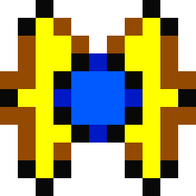
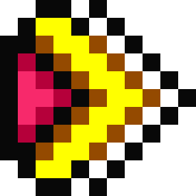
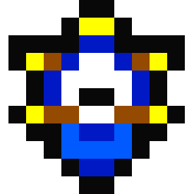
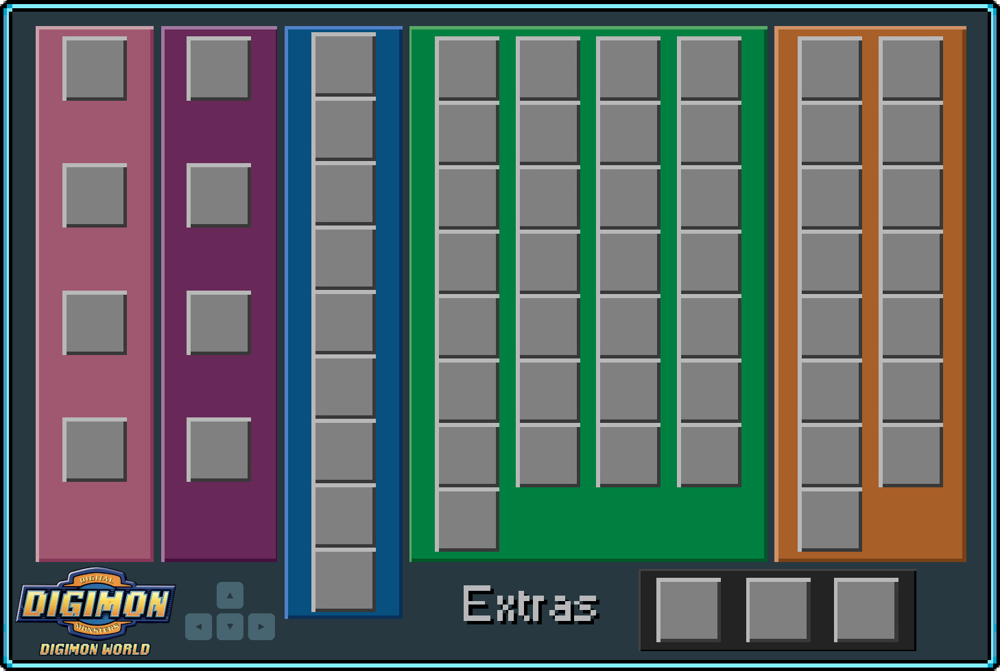

Def
SPEED
BRAINS
Native Forest
1 – Pegue os itens iniciais com Tokomon e as carnes com Tanemon. Após treinar e conseguir um Digimon razoavelmente forte vá pelo caminho de baixo para chegar a Native Forest. Assim que entrar Agumon desafiará você, vença-o para que ele vá para a cidade e monte o banco ao lado da casa de Jijimon.
2 – Continue seguindo para baixo até encontrar Palmon, fale com ela para iniciar uma luta. Ela será uma adversária melhor que Agumon, pois seus golpes de envenenamento lhe tiram bastante vida, então leve vários medicamentos para recuperar a energia. Assim que vence-la, ela irá para a cidade substituir Tanemon na fazenda.
3 – Ao lado da latrina da Native Forest, seguindo para a direita, você encontrará o caminho para Kunemon’s Bed. Dê uma comida para ele para iniciar o combate. Se vence-lo, ele irá para a cidade e vai liberar o caminho para a Digimon Bridge.
Tropical Forest
1 – A tarde vá para a Digimon Bridge e continue seguindo o caminho para baixo e encontrar o Coela Point. Ande pela cabeça dos Coelamons para chegar a Tropical Forest.
2 – Siga para a esquerda e veja que a ponte na Digimon Bridge foi concertada ligando a cidade a Tropical Forest.
3 – Voltando para o ponto inicial da Tropical Forest, siga para a direita e você encontrará uma bifurcação com um caminho para cima e outro para a direita, siga pela direita de novo para chegar a Amida Forest. Desvie das flechas e chegue até o final que está marcado por um círculo vermelho. Centarumon aparecerá e irá para a cidade.
4 – Volte ao ponto inicial e novamente pegue o caminho da direita, mas dessa vez quando chegar na bifurcação pegue o caminho de cima. Fale com Betamon que irá para a cidade montar uma pequena loja.
5 – Volte ao ponto inicial da Tropical Forest de novo, mas dessa vez siga em frente até chegar a Overdell, lá haverá um caminho que dá em um cemitério. Ao entrar no Overdell Cemetery fale com Bakemon, ele lhe fará 3 perguntas em uma outra língua. Responda Yes, Yes e No para as perguntas para que ele vá para a cidade trabalhar como vigia noturno.
Drill Tunnel
1 – A entrada para o Drill Tunnel fica na Native Forest próximo a cidade. Dentro do Tunnel há 3 caminhos, para a esquerda, para direita e para baixo. Pegue o caminho da esquerda para entrar na área residencial e derrote Drimogemon.
2 – Agora siga pelo caminho da direita e ajude outro Drimogemon a retirar todo o monte de terra no local. Para realizar o serviço basta falar com ele, você ganhará o carrinho para transportar a terra para fora do Drill Tunnel, após acabar volte e fale com ele de novo para devolver o carrinho e receber dinheiro e habilidade como recompensas. Repita o processo até terminar de retirar toda a terra.
3 – Entre e saia do Underground Pound depois que tiver terminado de retirar o último monte de terra. Quando voltar, o Drimogemon vai ter terminado de cavar o túnel para Lava Cave. Entre nele e ajude-o a remover a pedra do caminho para desbloquear a passagem.
4 – Siga em frente para encontrar Meramon tentando fazer o vulcão entrar em erupção. Ao interrompe-lo ele lutará com você, ele é muito poderoso então certifique-se de ter um Digimon nível Ultimate ou um Champion bem forte antes de enfrentá-lo. Depois de derrotá-lo, ele irá para a cidade e montará o restaurante.
5 – Ainda no Drill Tunnel, fale com todos os Drimogemons do local. Um deles irá liberar o caminho rápido para o Mt. Panorama e outro vai cavar o túnel para a caverna do ancestral do Leomon, mas ainda vai demorar muito para que esses túneis fiquem prontos.
Gear Savana
1 – A erupção causada por Meramon liberou o caminho para o Mt. Panorama, siga por ele até chegar na Gear Savana. Há muito para se fazer no local, caso esteja nos primeiros 15 dias do mês você pode encontrar uma pequena loja que vende cartas pela área.
2 – Vasculhe o local para encontrar Elecmon, tome 3 choques dele para que ele vá para a cidade. Ainda no mesmo local, siga pela direita para encontrar Patamon, derrote-o 3 vezes para que vá para a cidade.
3 – Depois de derrotar Patamon vá pelo caminho de baixo para encontrar Biyomon. Tente pegá-lo 3 vezes até aparecer a mensagem “No again! Wait!”. Ele irá aparecer de novo, pegue-o e ele irá para a File City para trabalhar na Loja de Itens!
4 - Em outro lugar, observe Patamon, mas entre pela parte de baixo da tela para que isso aconteça! Em seguida, entre pelo caminho da direita, bata um papo com Leomon e saia.
Trash Mountain
1 – Logo ao lado da privada de Gear Savana fica a entrada para a Trash Mountain. Fale com Sukamon e pegue a vara de pescar a esquerda.
2 – Fale com KingSukamon e depois com todos os outros Sukamons do local. Se fizer isso, um Sukamon irá para a cidade trabalhar como vigia perto do banheiro.
Ancient Regions
1 – Volte para Amida Forest, o lugar onde encontrou Centarumon e siga em frente para chegar na Ancient Dino Region. Aqui você encontrará Tyrannomon, ele só deixará você passar se derrotá-lo.
2 – Siga em frente até chegar no túnel de ossos da Ancient Speedy Region. Vá adiante e derrote Saberdramon, depois de vence-lo ele irá mencionar a passagem secreta do local.
3 – A passagem é bem escondida. Quando estiver atravessando o túnel de ossos vá seguindo para a esquerda e você entrará nela. Lá estará Meteormon, derrote-o e volte para encontrar Tyrannomon, acontecerá uma animação onde MasterTyrannomon aparece e manda Tyrannomon para a cidade.
4 – Entre novamente no local onde estava Meteormon e você encontrará Nanimon. Ele fugirá e deixará cair a Dimensional Key Chain que dobrará o número de itens que você pode carregar.
Great Canyon
1 – Na cidade, fale com Yuramon para que ele mencione a ponte invisível em Overdell que leva para o Great Canyon. Aproveite e antes de ir para lá passe pelo Coela Point e fale com os Coelamons para que um deles vá para a cidade, é necessário que esteja de tarde para fazer isso.
2 – Siga pela ponte invisível para chegar ao Great Canyon. Entre na loja logo ao lado e ajude Monochromon a vender os itens, se conseguir mais de 3000 bits ele irá para a cidade ajudar na loja de itens.
3 – Em frente você encontrará uma colina, ande nela até o chão cair. Quando estiver lá embaixo, pegue o elevador e suba até o último andar. Você está agora no ninho de Birdramon, derrote-a e ela irá para a cidade montar uma firma de viagens.
Freezeland
1 – Depois do Great Canyon está a passagem para Freezeland. Assim que entrar na 3ª parte dessa área você encontrará uma bifurcação, siga pela direita.
2 – Agora você está na área do gelo quebradiço, há 4 caminhos para onde ir. Em um deles você vai achar apenas inimigos, em dois deles achará Mojyamons que querem trocar itens e no outro o iglu do Penguinmon. Derrote Penguinmon no Curling para que ele vá para a cidade.
3 – Volte para a área da bifurcação e siga para cima. Derrote Garurumon e volte no dia seguinte à tarde para derrotá-lo de novo. Durante a 2ª batalha você não poderá ajudar seu Digimon, então o deixe muito forte antes de lutar com ele. Depois que terminar de vencê-lo de novo, ele irá trabalhar no restaurante da cidade.
Misty Trees e Geko Swamp
1 – Volte a Gear Savana e siga pelo caminho ao lado da entrada para a Trash Mountain, você estará no Geko Swamp. Continue seguindo em frente para chegar em Misty Trees, lá derrote Gabumon e ele irá para a cidade.
2 – Volte para o pântano e à noite derrote Otamamon. Vários Gekomons vão aparecer e o levarão para o palácio do ShogunGekomon em Volume Villa, ele jogará um feitiço que permitirá a você enxergar melhor na névoa. Após isso, o caminho para Volume Villa fica liberado.
3 – Volte para Misty Trees, sem a névoa você poderá encontrar Cherrymon no local. Fale com ele para que ele libere a passagem para Toy Town.
Toy Town
1 – Há apenas duas casas e uma mansão na cidade. Entre na primeira e cheque o urso do sofá. É uma fantasia que você terá de vestir em Numemon para entrar na mansão. Para evoluir para Numemon deixe com que o tempo de evolução de um Digimon Rookie acabe sem que ele conheça uma condição de evolução compatível com suas habilidades.
2 – Na segunda casa, fale com Tinmon. Depois entre na mansão e escolha a porta certa para prosseguir, caso escolha a porta errada uma panelona vai cair na sua cabeça.
3 – Na última sala derrote WaruMonzaemon e pegue o item Gear. Volte para a casa dos Tinmons e devolva o item para o robô que na verdade é um Hagurumon. Ao fazer isso, a fantasia de Monzaemon estará disponível na casa de Jijimon.
Ice Sanctuary
1 – O caminho para o santuário fica em Freezeland, mas você só poderá entrar se tiver um Digimon do tipo vacina. Se estiver acompanhado de um, ele irá achar a passagem embaixo da estátua de gelo.
2 – Na segunda sala do santuário siga pela passagem escura à direita. Após a passagem você encontrará um lugar com alguns cristais, use-os para ser teletransportado. Cuidado, pois há alguns que te levam de volta para a entrada do santuário.
3 – Chegando em um ponto amplo e cheio de digimons, detone todos a sua volta e encoste-se à luz de baixo que está no meio do local. Volte para a entrada do santuário e fale com Angemon, ele irá para File City trabalhar como informante na casa de Jijimon.
Mt. Panorama
1 – Perto da entrada de Gear Savana, entre na caverna que se abriu à direita para falar com Drimogemon. Ele irá para a File City para abrir uma mina de itens.
Grey's Lord Mansion
1 – Para entrar nessa mansão, você precisará de um Digimon do tipo vírus. Entre nas portas que conseguir e pegue a chave que está dentro da lareira dessa sala.
2 – Cheque a parte de cima da mansão onde há vários Rockmons para cair em uma sala secreta. Vá para a direita e cheque o caixão para chegar no subsolo.
3 – Myotismon estará quase morrendo e lhe dará a Fridge Key. Volte à cozinha e use a chave na geladeira, a carne não estará lá. Saia da mansão para encontrar a carne no chão e leve-a para Myotismon, depois vá embora.
File City
1 – Fale com Jijimon e saia, Greymon aparecerá e desafiará você. Se vence-lo, ele irá abrir a arena da cidade.
Great Canyon
1 – Fale com Yuramon na cidade para saber sobre os bandidos que estão aterrorizando o Canyon. Vá para lá e Ogremon e seus capangas enfrentarão você, vença-os e corra atrás deles usando o elevador para descer.
2 – Fale com Agumon na entrada da fortaleza para que ele deixe você passar. No final, Ogremon e seus capangas estarão lá, derrote-os novamente e pegue o elevador para subir.
3 – Mate o guardra. Quando for seguir, Shellmon pedirá ajuda. Volte ao elevador da fortaleza e desça. Vá até a entrada de Freezeland e pegue o caminho da esquerda para salvar Shellmon na ponte, ele irá para a cidade publicar notícias.
Secret Beach Cave
1 – Na área do gelo quebradiço em Freezeland fale com Whamon para que ele leve você para a Secret Beach Cave. Ogremon estará esperando acompanhado de WaruSeadramon e Agumon, vença-os e ele fugirá de novo. Whamon irá para a cidade e montará o porto.
2 – Volte na Secret Beach Cave e pegue o item Misty Egg na máquina.
Drill Tunnel
1 – Vá até o Drill Tunnel para enfrentar Ogremon pela última vez, ao vencer ele desistirá e irá para a cidade.
Tropical Forest
1 – No 15º dia do mês, pegue a Rain Plant ao lado de Tanemon e vá para a Tropical Forest. Haverá uma planta diferente das outras, use a Rain Plant nela e Vegiemon surgirá. Ele irá para a cidade substituir Palmon na fazenda.
2 – Entre na primeira tela e saia em diferentes horários até que Piximon apareça. Derrote-o e ele irá para a cidade vender manuais de treinamento.
Geko Swamp e Dragon Eye Lake
1 – Compre vários cards e os dê para ShogunGekomon. Você receberá pontos de mérito pelas cartas que der a ele, quanto mais raras, mais pontos você ganha. Quando tiver 300 pontos compre a Amazing Rod.
2 – Ao sair, fale com o Gekomon na porta para que ele fique disponível como oponente na arena.
3 – À tarde vá para a parte menor do Dragon Eye Lake, haverá uma sombra maior que as outras seguindo sempre o mesmo percurso. Use a vara para pescar o dono da sombra, um gigantesco Seadramon. Ao aparecer, escolha a 1ª opção dada por ele para ganhar a Blue Flaute, ela servirá para chama-lo quantas vezes quiser.
Beetle Land
1 – Seadramon levará você para uma ilha menor perto da ilha arquivo chamada Beetle Land. Fale com Tentomon para saber sobre um torneio, ele acontece todo dia 22 e você só poderá participar com um Digimon inseto.
2 – Depois fale com Kabuterimon, ele irá embora para a File City e melhorará os equipamentos do Green Gym. Depois, fale com Kuwagamon, ele irá ajudar Kabuterimon no Green Gym. Toque a Blue Flaute para voltar.
Mt. Panorama
1 – No Mt. Panorama cheque a marca alienígena no chão, depois volte para a cidade e leia a notícia de Shellmon sobre um OVNI que foi avistado pelo local. Volte novamente no lugar onde você viu a marca alienígena e você encontrará mais delas, depois volte de novo para a cidade e leia mais uma notícia sobre o OVNI. Retorne ao Mt. Panorama pela terceira vez e você encontrará Vademon, após um pequeno diálogo ele irá para a cidade trabalhar no restaurante.
Drill Tunnel e Native Forest
1 – Volte ao Drill Tunnel pela última vez e vá até o extremo sul da caverna, o último Drimogemon finalmente abriu a passagem para a caverna dos ancestrais do Leomon. Cheque a estátua do SaberLeomon para ganhar a Leomon Stone e entregue-a para ele em Gear Savana, Leomon irá para a cidade ajudar Birdramon na firma de viagens.
2 – Em Native Forest, cheque o tronco com uma porta e prepare-se para ser atacado por Etemon. Se vence-lo, ele irá para a Digimon Bridge nos limites da cidade montar uma nova loja que vende apenas Gold Bananas.
Factorial Town e Digimon Bridge
1 – Fale com Whamon no porto e vá para Factorial Town. Entre no esgoto de lá, fale com o Numemon e saia.
2 – Entre na casa de Andromon e converse com ele. Agora saia, siga à direita e converse com os Guardromons que estão bloqueando seu caminho. Fale de novo com Andromon, depois volte e fale de novo com os Guardromons, pergunte a eles sobre o horário de revezamento.
3 – Ao meio dia em ponto, os Guardromons não estarão mais lá. Entre e procure por Giromon, ele lutará com você. Depois de derrotá-lo, volte e fale com Andromon para desligar os computadores.
4 – Entre no esgoto novamente para ser desafiado por Numemon, um dos chefes mais fáceis do jogo. Depois de vencê-lo, ele irá para a cidade abrir a loja secreta de itens.
5 – Vá para Digimon Bridge e você encontrará Ninjamon, depois que derrota-lo, ele irá ajudar Numemon na loja secreta.
6 – Novamente em Factorial Town, fale com Andromon, saia e volte 1 dia depois. Ele irá para a cidade, mas não fará nada. Aproveite e fale também com Giromon, ele irá se juntar à turma que trabalha no restaurante da cidade.
Grey's Lord Mansion
1 – Lembre-se que para entrar aqui é necessário ter um Digimon do tipo Vírus. Procure Myotismon por todas as partes, você não conseguirá encontrá-lo. Quando estiver saindo, Devimon aparecerá, volte e entre pela porta da direita que antes não se abria.
2 – No laboratório, encontre SkullGreymon e derrote-o. Na sala anterior, Myotismon estará no canto direito da tela, fale com ele para que SkullGreymon e Myotismon fiquem disponíveis como oponentes na arena.
Mt. Infinity
1 – Fale com Jijimon, ele dirá que abriu o caminho para o Mt. Infinity que fica perto da cachoeira. Ao sair, Airdramon lutará com você, vença-o. Siga pelo caminho indicado por Jijimon para entrar no Mt. Infinity.
2 – Use os raios de luz verde para ser teletransportado para os andares superiores. Evite batalhas desnecessárias, pois há muitos chefes por aqui. Quando encontrar Devimon, o primeiro deles, derrote-o e continue em frente.
3 – No caminho você encontrará Megadramon. A batalha com ele não é obrigatória, mas se não derrota-lo, ele não irá para a cidade depois.
4 – Antes de entrar na sala final você terá que derrotar MetalGreymon. Não é um chefe tão difícil, mas poupe sua energia para o final.
5 – Agora chegou a hora de derrotar Analogman, o chefe final do jogo. Ele vai materializar seu Mugendramon para lutar com você, uma verdadeira máquina de guerra com ataques poderosos que tiram quase 1000 de HP. Não dê chance a ele para atacar você, use golpes rápidos e leve vários itens de recuperação de vida, pois será uma longa batalha. Depois de derrotá-lo é só curtir a animação final do jogo.
Trabalhinho Extra
Pensa que acabou o jogo? Se você achou que sim, está errado. Ainda há algumas coisas para serem feitas antes do verdadeiro final, Digimons secretos estão esperando por você para levá-los a cidade. Use o Memory Card para voltar ao Digimundo e fale com Jijimon, ele dirá que Analogman voltou.
Os Digimons extras:
1 – Volte para o Mt. Infinity no mesmo lugar onde enfrentou Analogman para encontrar um ovo no chão, toque nele para acordar Digitamamon que desafiará você. Ele é outro chefe poderoso, não é tão forte quanto Mugendramon, mas tem mais vida (9999 de HP). Depois de derrotá-lo, ele irá para o restaurante.
2 – Vá ao Mt. Panorama para encontrar Unimon ferido no chão. Dê o item medicine a ele para que vá para a cidade trabalhar na loja.
3 – Depois de trocar todos os itens com todos os 3 Mojyamons em Freezeland, o último deles irá para a cidade trabalhar na loja secreta.
4 – Vá para o Mt. Panorama na área onde se encontram os 3 MudFrigimons. Entre nessa tela e saia em diferentes horários até que Mamemon apareça, derrote-o e ele irá trabalhar na loja da cidade.
5 – Depois que levar o Mamemon a cidade, use a passagem de Gear Savana que leva para Factorial Town. Entre e saia em diferentes horários até que MetalMamemon apareça, derrote-o. Ele ajudará Penguinmon no joguinho de Curling.
6 – Converse com Angemon para que ele lhe informe sobre o Digimon que aparece toda manhã em Misty Trees. Vá para lá quando estiver amanhecendo para encontrar Kokatorimon, depois de derrota-lo ele irá construir uma estátua entre a casa de Jijimon e o banco.
7 – Encontre Nanimon na Ogre Fortress, ele fugirá. Depois encontre-o de novo na caverna dos ancestrais do Leomon, na sala de WaruMonzaemon em Toy Town, Ancient Dino Region e Factorial Town. Ele irá para a cidade ajudar Agumon no banco.
8 – Pegue um Digimon de fogo, pois estes odeiam o frio. Vá para Freezeland e deixe o coitado doente. Uma boa maneira de fazer isso é dar a ele o item Moldy Meat, pois esse item o deixará doente automaticamente. Para consegui-lo vá até a máquina de vendas na Ancient Dino Region.
Frigimon aparecerá e o levará para seu iglu secreto. Depois apareça novamente no iglu com seu Digimon em estado saudável, Frigimon irá para a cidade trabalhar no restaurante.
Analogman ataca novamente
1 – Você terá que achar a Back Dimension. O lugar é aleatório, portanto procure nos pontos mais óbvios, como em Ice Sanctuary, Grey Lord's Mansion e Ogre Fortress... Se entrar no lugar correto, automaticamente você será levado para outra dimensão (é quase igual ao Mt. Infinity).
2 – Ao chegar ao final, você terá de enfrentar Mugendramon novamente. Depois que derrota-lo, descobrirá que ele era apenas uma réplica.
3 – Volte e fale com o Jijimon, ele te presenteará com um item secreto e lhe dará os parabéns. Se fez tudo que está no detonado, o rating da cidade será de 100 pontos.
Sprites
Ícones dos Digimons: @placebo_yue
Ícones das Digitamas: metaldodomon
Ícones: romsstar
Fonte: romsstar
Informações
Digievoluções: Harceru
Digievoluções especiais: Ginoshie e SydMontague
Recomendações
Informações detalhadas sobre diversas mecânicas do jogo por Ginoshie e SydMontague
Aplicativo com diversas ferramentas sobre Digimon World 1 por Ginoshie
Native Forest
1 – Collect the starting items from Tokomon and the meat from Tanemon. After training and obtaining a reasonably strong Digimon, take the lower path to reach Native Forest. As soon as you enter, Agumon will challenge you; defeat him so he’ll go to town and set up the bench next to Jijimon’s house.
2 – Continue heading down until you find Palmon; talk to her to start a battle. She’ll be a tougher opponent than Agumon, as her poison attacks deal significant damage, so bring plenty of healing items to restore your health. Once you defeat her, she’ll go to town to replace Tanemon at the farm.
3 – Next to the Native Forest outhouse, heading right, you’ll find the path to Kunemon’s Bed. Give him some food to start the battle. If you defeat him, he’ll go to the city and clear the path to the Digimon Bridge.
Tropical Forest
1 – In the afternoon, go to the Digimon Bridge and continue following the path down to find Coela Point. Walk across the Coelamons’ heads to reach the Tropical Forest.
2 – Head left and you’ll see that the bridge at Digimon Bridge has been repaired, connecting the city to Tropical Forest.
3 – Returning to the starting point of the Tropical Forest, head right and you’ll find a fork with one path leading up and another to the right; take the right path again to reach Amida Forest. Avoid the arrows and proceed to the end, marked by a red circle. Centarumon will appear and head to the city.
4 – Return to the starting point and take the right path again, but this time, when you reach the fork, take the path going up. Talk to Betamon, who will head to the city to set up a small shop.
5 – Return to the starting point of the Tropical Forest again, but this time go straight ahead until you reach Overdell; there you’ll find a path leading to a cemetery. Upon entering Overdell Cemetery, speak with Bakemon; he’ll ask you three questions in another language. Answer Yes, Yes, and No to the questions so that he’ll go to the city to work as a night watchman.
Drill Tunnel
1 – The entrance to the Drill Tunnel is in the Native Forest near the town. Inside the tunnel, there are three paths: left, right, and down. Take the left path to enter the residential area and defeat Drimogemon.
2 – Now follow the path to the right and help another Drimogemon remove all the dirt from the site. To do this, simply talk to him; you’ll receive a cart to transport the dirt out of the Drill Tunnel. After finishing, return and talk to him again to return the cart and receive money and a skill as rewards. Repeat the process until you’ve removed all the dirt.
3 – Enter and exit the Underground Pound after you’ve finished removing the last pile of dirt. When you return, Drimogemon will have finished digging the tunnel to Lava Cave. Enter it and help him remove the rock from the path to clear the way.
4 – Head forward to find Meramon trying to make the volcano erupt. If you interrupt him, he’ll fight you; he’s very powerful, so make sure you have an Ultimate-level Digimon or a very strong Champion before facing him. After defeating him, he’ll go to the city and set up the restaurant.
5 – While still in the Drill Tunnel, talk to all the Drimogemons there. One of them will clear the shortcut to Mt. Panorama, and another will dig the tunnel to Leomon’s ancestor’s cave, but it will still take a long time for these tunnels to be finished.
Gear Savanna
1 – The eruption caused by Meramon has cleared the path to Mt. Panorama; follow it until you reach Gear Savana. There’s plenty to do there; if it’s within the first 15 days of the month, you can find a small shop selling cards in the area.
2 – Search the area to find Elecmon; take 3 shocks from him so he’ll go to the city. Still in the same area, head right to find Patamon; defeat him 3 times so he’ll go to the city.
3 – After defeating Patamon, take the lower path to find Biyomon. Try to catch him three times until the message “No again! Wait!” appears. He’ll reappear; catch him, and he’ll head to File City to work at the Item Shop!
4 – Elsewhere, look for Patamon, but enter from the bottom of the screen to make this happen! Then, take the path on the right, chat with Leomon, and exit.
Trash Mountain
1 – Right next to Gear Savana’s restroom is the entrance to Trash Mountain. Talk to Sukamon and grab the fishing rod on the left.
2 – Talk to KingSukamon and then to all the other Sukamons in the area. If you do this, a Sukamon will go to the city to work as a guard near the restroom.
Ancient Regions
1 – Return to Amida Forest, where you found Centarumon, and head straight ahead to reach the Ancient Dino Region. Here you’ll find Tyrannomon; he’ll only let you pass if you defeat him.
2 – Keep going until you reach the bone tunnel in the Ancient Speedy Region. Go ahead and defeat Saberdramon; after you beat him, he’ll mention the secret passage in the area.
3 – The passage is well hidden. As you’re crossing the bone tunnel, keep going left and you’ll enter it. There you’ll find Meteormon; defeat him and return to face Tyrannomon. An animation will play where MasterTyrannomon appears and sends Tyrannomon to the city.
4 – Go back to where Meteormon was, and you’ll find Nanimon. He’ll run away and drop the Dimensional Key Chain, which will double the number of items you can carry.
Great Canyon
1 – In town, talk to Yuramon so he mentions the invisible bridge in Overdell that leads to the Great Canyon. While you’re at it, before heading there, stop by Coela Point and talk to the Coelamons so one of them will go to town; it must be in the afternoon to do this.
2 – Cross the invisible bridge to reach the Great Canyon. Enter the shop right next to it and help Monochromon sell the items; if you earn more than 3,000 bits, he’ll go to the city to help out at the item shop.
3 – Ahead, you’ll find a hill; walk up it until the floor drops. Once you’re down below, take the elevator and go up to the top floor. You’re now in Birdramon’s nest; defeat her, and she’ll go to the city to set up a travel agency.
Freezeland
1 – After the Great Canyon is the passage to Freezeland. As soon as you enter the third part of this area, you’ll find a fork in the road; take the right path.
2 – You are now in the area of the cracked ice; there are four paths to choose from. On one of them, you’ll find only enemies; on two of them, you’ll find Mojyamons who want to trade items; and on the other, Penguinmon’s igloo. Defeat Penguinmon in Curling so he’ll go to the city.
3 – Return to the fork area and head up. Defeat Garurumon and come back the following afternoon to defeat him again. During the second battle, you won’t be able to assist your Digimon, so make sure he’s very strong before fighting him. After you defeat him again, he’ll go to work at the town’s restaurant.
Misty Trees and Geko Swamp
1 – Return to Gear Savana and follow the path next to the entrance to Trash Mountain; you’ll be in Geko Swamp. Keep going straight to reach Misty Trees; there, defeat Gabumon and he’ll go to the city.
2 – Return to the swamp and defeat Otamamon at night. Several Gekomons will appear and take you to ShogunGekomon’s palace in Volume Villa; he will cast a spell that will allow you to see better through the fog. After that, the path to Volume Villa will be cleared.
3 – Return to Misty Trees; without the fog, you’ll be able to find Cherrymon there. Talk to him so he’ll open the path to Toy Town.
Toy Town
1 – There are only two houses and a mansion in the town. Enter the first one and check the bear on the sofa. It’s a costume you’ll need to put on Numemon to enter the mansion. To evolve into Numemon, let the evolution timer for a Rookie Digimon run out without it encountering an evolution condition compatible with its abilities.
2 – In the second house, talk to Tinmon. Then enter the mansion and choose the right door to proceed; if you choose the wrong door, a large pot will fall on your head.
3 – In the last room, defeat WaruMonzaemon and pick up the Gear item. Return to the Tinmons’ house and give the item back to the robot, who is actually a Hagurumon. Doing this will make the Monzaemon costume available at Jijimon’s house.
Ice Sanctuary
1 – The path to the sanctuary is in Freezeland, but you can only enter if you have a Vaccine-type Digimon. If you’re accompanied by one, it will find the passage beneath the ice statue.
2 – In the second room of the sanctuary, follow the dark passage on the right. After the passage, you’ll find a spot with some crystals; use them to teleport. Be careful, as some will take you back to the sanctuary’s entrance.
3 – When you reach a large area full of Digimon, defeat all the ones around you and stand next to the light at the bottom in the middle of the room. Return to the sanctuary entrance and talk to Angemon; he will go to File City to work as an informant at Jijimon’s house.
Mt. Panorama
1 – Near the entrance to Gear Savana, enter the cave that opened on the right to speak with Drimogemon. He will go to File City to open an item mine.
Grey's Lord Mansion
1 – To enter this mansion, you’ll need a Virus-type Digimon. Go through any doors you can and grab the key inside the fireplace in that room.
2 – Check the upper part of the mansion where there are several Rockmons to fall into a secret room. Go right and check the coffin to reach the basement.
3 – Myotismon will be near death and will give you the Fridge Key. Return to the kitchen and use the key on the refrigerator; the meat won’t be there. Leave the mansion to find the meat on the ground and take it to Myotismon, then leave.
File City
1 – Talk to Jijimon and leave; Greymon will appear and challenge you. If you defeat him, he will open the city arena.
Great Canyon
1 – Talk to Yuramon in town to learn about the bandits terrorizing the Canyon. Go there, and Ogremon and his henchmen will confront you. Defeat them and chase after them using the elevator to go down.
2 – Talk to Agumon at the fortress entrance so he’ll let you through. At the end, Ogremon and his henchmen will be there; defeat them again and take the elevator up.
3 – Defeat the guard. When you’re about to continue, Shellmon will ask for help. Return to the fortress elevator and go down. Go to the entrance of Freezeland and take the left path to save Shellmon on the bridge; he’ll go to the city to spread the news.
Secret Beach Cave
1 – In the area of the cracked ice in Freezeland, talk to Whamon so he can take you to Secret Beach Cave. Ogremon will be waiting there with WaruSeadramon and Agumon; defeat them, and he’ll run away again. Whamon will go to the city and set up the port.
2 – Return to Secret Beach Cave and take the Misty Egg item from the machine.
Drill Tunnel
1 – Go to the Drill Tunnel to face Ogremon one last time; once you defeat him, he’ll give up and head to the city.
Tropical Forest
1 – On the 15th day of the month, take the Rain Plant next to Tanemon and go to the Tropical Forest. There will be a plant different from the others; use the Rain Plant on it, and Vegiemon will appear. He will go to the city to replace Palmon at the farm.
2 – Enter the first screen and exit at different times until Piximon appears. Defeat him, and he’ll go to town to sell training manuals.
Geko Swamp and Dragon Eye Lake
1 – Buy several cards and give them to ShogunGekomon. You’ll receive merit points for the cards you give him; the rarer they are, the more points you earn. When you have 300 points, buy the Amazing Rod.
2 – When you leave, talk to Gekomon at the door so he becomes available as an opponent in the arena.
3 – In the afternoon, go to the smaller part of Dragon Eye Lake; there will be a shadow larger than the others, always following the same path. Use the rod to catch the owner of the shadow, a gigantic Seadramon. When it appears, choose the first option it offers to win the Blue Flaute; it will allow you to summon it as many times as you want.
Beetle Land
1 – Seadramon will take you to a smaller island near Archive Island called Beetle Land. Talk to Tentomon to learn about a tournament; it takes place every 22nd, and you can only participate with an insect Digimon.
2 – Then talk to Kabuterimon; he’ll leave for File City to upgrade the equipment at the Green Gym. After that, talk to Kuwagamon; he’ll help Kabuterimon at the Green Gym. Play the Blue Flaute to return.
Mt. Panorama
1 – At Mt. Panorama, check the alien mark on the ground, then return to the city and read Shellmon’s news report about a UFO that was spotted in the area. Go back to the place where you saw the alien mark and you’ll find more of them; then return to the city again and read another news report about the UFO. Return to Mt. Panorama for the third time and you’ll find Vademon; after a short conversation, he’ll go to the city to work at the restaurant.
Drill Tunnel and Native Forest
1 – Return to Drill Tunnel one last time and go to the southernmost part of the cave; the last Drimogemon has finally opened the passage to Leomon’s ancestral cave. Check the SaberLeomon statue to obtain the Leomon Stone and give it to him in Gear Savana; Leomon will go to the city to help Birdramon at the travel agency.
2 – In Native Forest, check the tree trunk with a door and prepare to be attacked by Etemon. If you defeat him, he will go to the Digimon Bridge on the outskirts of town to set up a new shop that sells only Gold Bananas.
Factorial Town and Digimon Bridge
1 – Talk to Whamon at the port and go to Factorial Town. Enter the sewer there, talk to Numemon, and exit.
2 – Enter Andromon’s house and talk to him. Now exit, go right, and talk to the Guardromons blocking your path. Talk to Andromon again, then go back and talk to the Guardromons again, asking them about the shift schedule.
3 – At exactly noon, the Guardromons will be gone. Go inside and look for Giromon; he’ll fight you. After defeating him, go back and talk to Andromon to shut down the computers.
4 – Enter the sewers again to face Numemon, one of the easiest bosses in the game. After defeating him, he’ll go to the city to open the secret item shop.
5 – Go to Digimon Bridge and you’ll find Ninjamon; after defeating him, he’ll help Numemon at the secret shop.
6 – Back in Factorial Town, talk to Andromon, leave, and return one day later. He’ll go to the city but won’t do anything. Take the opportunity to also talk to Giromon; he’ll join the group working at the city’s restaurant.
Grey's Lord Mansion
1 – Remember that to enter here, you need a Virus-type Digimon. Look everywhere for Myotismon; you won’t be able to find him. As you’re leaving, Devimon will appear; go back and enter through the door on the right that wouldn’t open before.
2 – In the lab, find SkullGreymon and defeat him. In the previous room, Myotismon will be in the right corner of the screen; talk to him so that SkullGreymon and Myotismon become available as opponents in the arena.
Mt. Infinity
1 – Talk to Jijimon; he’ll tell you he’s cleared the path to Mt. Infinity, which is near the waterfall. When you exit, Airdramon will fight you—defeat him. Follow the path indicated by Jijimon to enter Mt. Infinity.
2 – Use the green beams of light to be teleported to the upper floors. Avoid unnecessary battles, as there are many bosses here. When you encounter Devimon, the first of them, defeat him and continue forward.
3 – Along the way, you’ll encounter Megadramon. The battle with him isn’t mandatory, but if you don’t defeat him, he won’t go to the city afterward.
4 – Before entering the final room, you’ll have to defeat MetalGreymon. He isn’t a particularly difficult boss, but save your energy for the end.
5 – Now it’s time to defeat Analogman, the game’s final boss. He’ll summon his Mugendramon to fight you—a true war machine with powerful attacks that deal nearly 1,000 HP damage. Don’t give him a chance to attack you; use quick strikes and bring plenty of health recovery items, as this will be a long battle. After defeating him, just enjoy the game’s final cutscene.
A Little Extra Work
Think the game is over? If you thought so, you’re wrong. There are still a few things to do before the true ending—secret Digimon are waiting for you to take them to the city. Use the Memory Card to return to the DigiWorld and talk to Jijimon; he’ll tell you that Analogman has returned.
The extra Digimon:
1 – Return to Mt. Infinity to the same spot where you faced Analogman to find an egg on the ground; tap it to wake up Digitamamon, who will challenge you. He’s another powerful boss—not as strong as Mugendramon, but he has more health (9999 HP). After defeating him, he’ll head to the restaurant.
2 – Go to Mt. Panorama to find Unimon lying wounded on the ground. Give him the medicine item so he can go to the city to work at the shop.
3 – After trading all items with all 3 Mojyamons in Freezeland, the last one will go to the city to work at the secret shop.
4 – Go to Mt. Panorama to the area where the 3 MudFrigimons are located. Enter that screen and exit at different times until Mamemon appears; defeat him, and he will go work at the town’s shop.
5 – After taking Mamemon to the city, use the Gear Savana passage that leads to Factorial Town. Enter and exit at different times until MetalMamemon appears; defeat him. He will help Penguinmon in the curling game.
6 – Talk to Angemon so he can tell you about the Digimon that appears every morning in Misty Trees. Go there at dawn to find Kokatorimon; after defeating him, he will build a statue between Jijimon’s house and the bank.
7 – Find Nanimon at Ogre Fortress; he’ll run away. Then find him again in Leomon’s ancestral cave, in WaruMonzaemon’s room in Toy Town, Ancient Dino Region, and Factorial Town. He’ll go to the city to help Agumon at the bank.
8 – Get a Fire-type Digimon, since they hate the cold. Go to Freezeland and make the poor thing sick. A good way to do this is to give it the Moldy Meat item, since this item will automatically make it sick. To get it, go to the vending machine in the Ancient Dino Region.
Frigimon will appear and take you to his secret igloo. Then return to the igloo with your Digimon in good health, and Frigimon will go to the city to work at the restaurant.
Analogman strikes again
1 – You’ll have to find the Back Dimension. The location is random, so look in the most obvious spots, such as Ice Sanctuary, Grey Lord’s Mansion, and Ogre Fortress... If you enter the correct location, you’ll automatically be transported to another dimension (it’s almost like Mt. Infinity).
2 – When you reach the end, you’ll have to face Mugendramon again. After defeating him, you’ll discover that he was just a replica.
3 – Go back and talk to Jijimon; he’ll give you a secret item and congratulate you. If you’ve done everything in the walkthrough, the city’s rating will be 100 points.
Sprites
Digimon icons: @placebo_yue
Digitama icons: metaldodomon
Icons: romsstar
Font: romsstar
Information
Digievolutions: Harceru
Special Digivolutions: Ginoshie e SydMontague
Recommendations
Detailed information on various game mechanics by Ginoshie e SydMontague
App with various tools for Digimon World 1 by Ginoshie